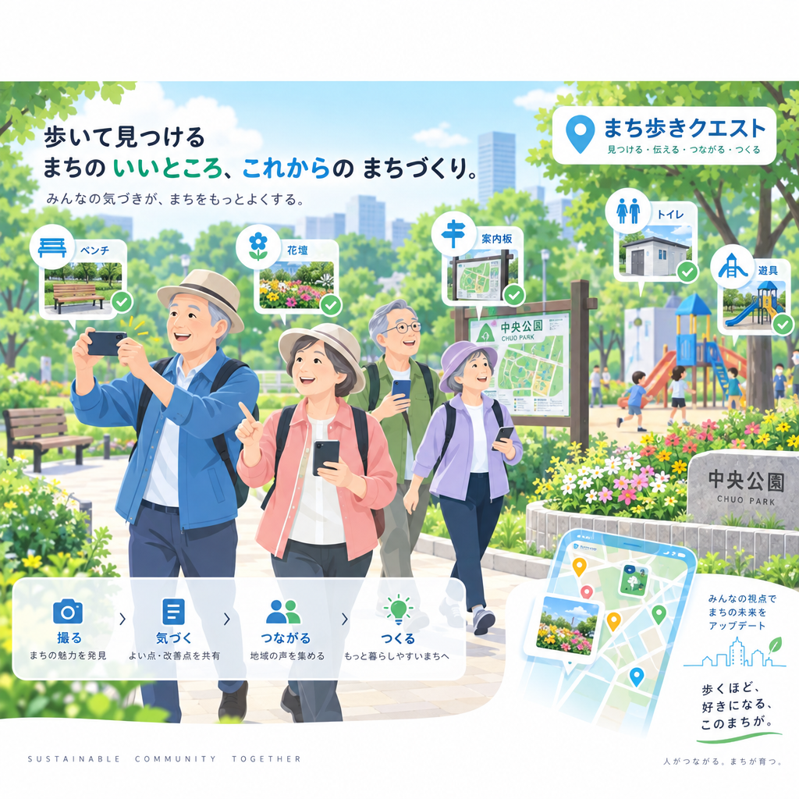
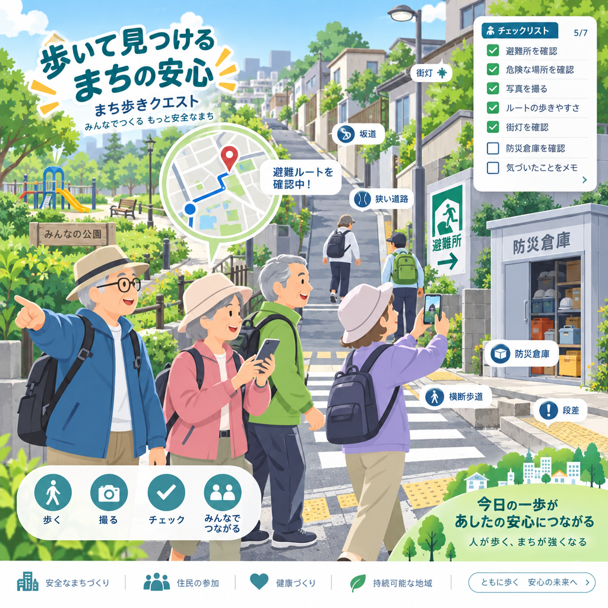
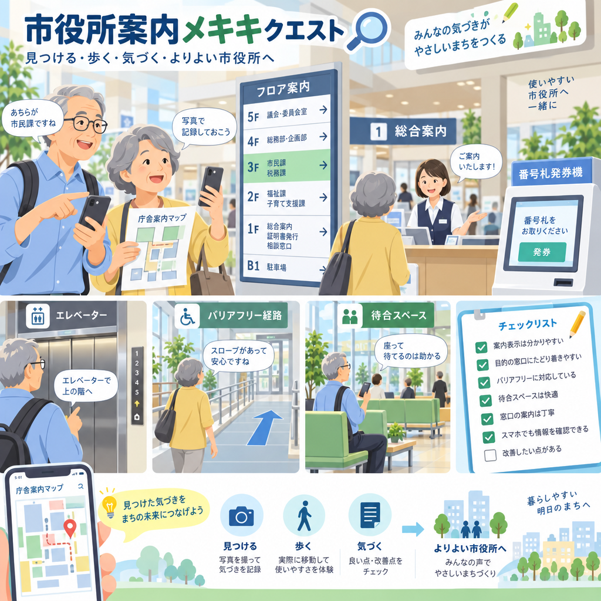

あなたの経験を活かせる「今日の出番」が届いています。

ベンチや案内表示を実際に使って、「もっとこうだったらいいな」を教えてください。
気になるものから。無理なく、自分のペースで参加できます。


中央公園をもっと使いやすくするため、市では実際に利用した人の気づきを集めています。
① 公園を歩く ② ベンチを使う ③ 案内を見る ④ 気づきを投稿
AIは投稿を整理するために使われます。最終的な政策判断は自治体が行います。
27件 集まっています
「日陰が少ない」「夏場に休みにくい」など、似た気づきがあります。
中央公園クエストへの参加、ありがとうございました。
地域のお店・施設などで使えるポイントです。
クエストで貯めて、地域で使う。
6 / 8回参加しました。
あと2回で「月8回参加ボーナス +1,000pt」
🚶 地域に出た時間 約7.2時間
💬 地域に届けた声 18件
🌱 改善検討につながった気づき 3件
「中央公園は日陰が少なく、夏は休みにくい」
324件のExperience Dataが集まりました。
「休憩環境」「案内表示」「トイレ」など10テーマに整理。
休憩環境が「現地確認したい課題」に選ばれました。
※デモ用の仮データです。
誰が・どこへ行き・何を使い・何を見て・どこで困り・何を感じたかを構造化。政策検討の材料として活用します。
人が動く。データが地域に残る。お金も地域を巡る。
地域課題をクエストに変え、シニアの社会参加とExperience Dataの蓄積を同時に生み出します。